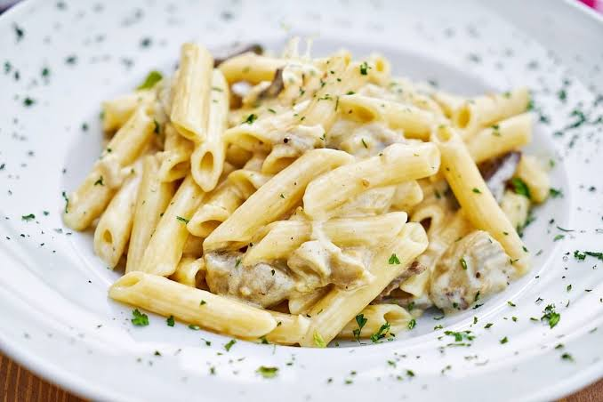

Creamy pasta Recipe

About the dish:
This is a delicious and creamy pasta dish that is perfect for a quick and easy meal.
Ingredients:
- 1/2 pound (225g) of your favorite pasta (such as fettuccine or spaghetti)
- 2 tablespoons unsalted butter
- 4 cloves garlic, finely minced
- 3/4 to 1 cup heavy cream (or double cream)
- 1 cup freshly grated Parmesan cheese
- Salt and freshly ground black pepper to taste
- 1/2 cup reserved pasta water
Instructions:
- Cook the Pasta: Bring a large pot of heavily salted water to a boil.
- Cook the pasta until it is one minute shy of al dente so it still has a slight bite. Before draining, reserve 1/2 cup of the starchy pasta water and set it aside.
- Build the Sauce: Melt the butter in a large skillet over medium-low heat. Add the minced garlic and sauté for 1 to 2 minutes until fragrant—do not let it brown too much.
- Add Cream: Pour in the heavy cream and a pinch of black pepper. Bring to a gentle simmer and let it cook for about 3-5 minutes until it thickens slightly. Keep the heat low to prevent the cream from curdling or splitting.
- Combine Cheese: Remove the skillet from the heat. Whisk in the freshly grated Parmesan cheese until it is completely melted and the sauce is smooth.
- Toss and Serve: Transfer the pasta directly into the skillet with the sauce. Toss well, adding a splash of the reserved pasta water to help the sauce cling to the noodles and reach the perfect consistency. Season with extra salt and black pepper if needed, and serve immediately.
Home